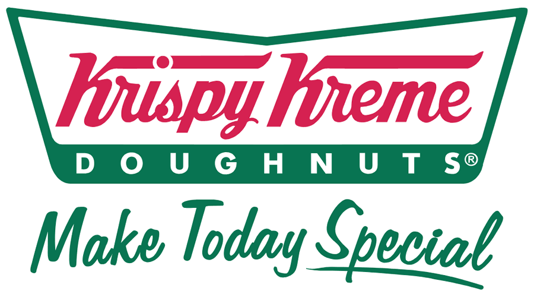
 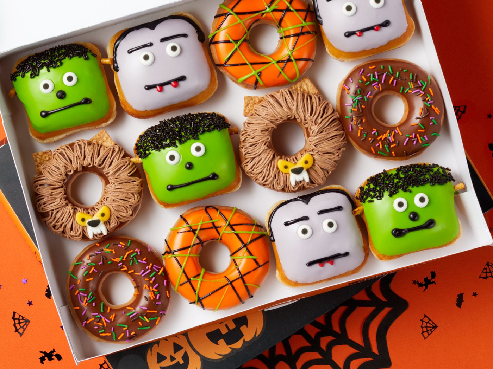
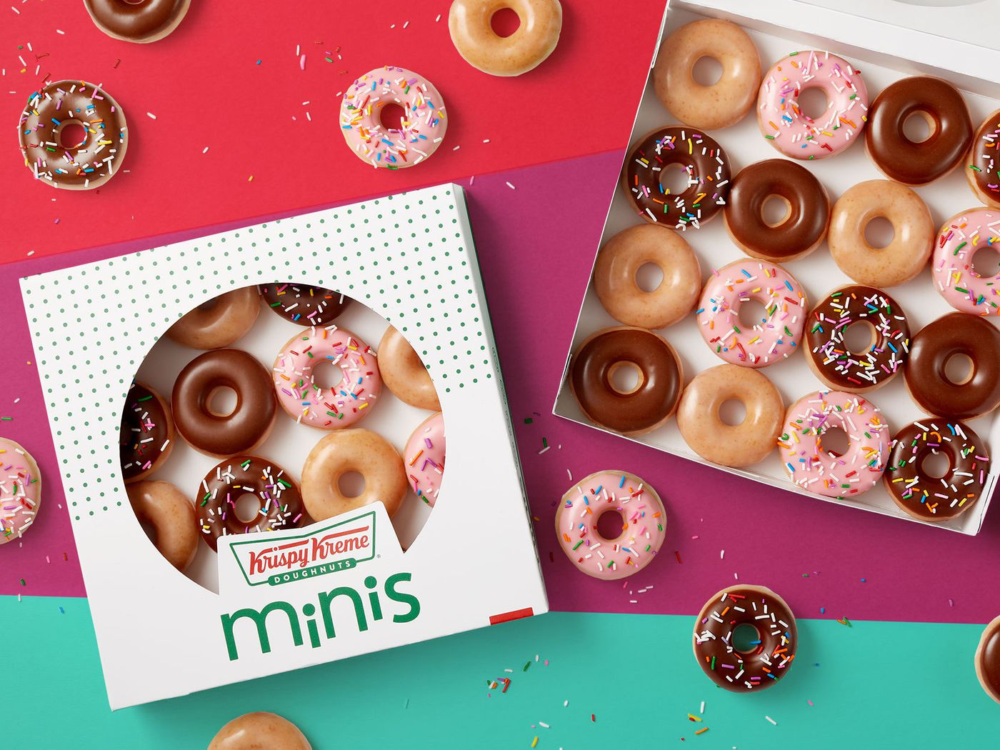
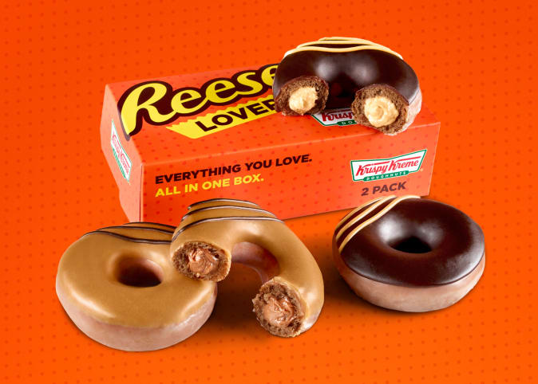
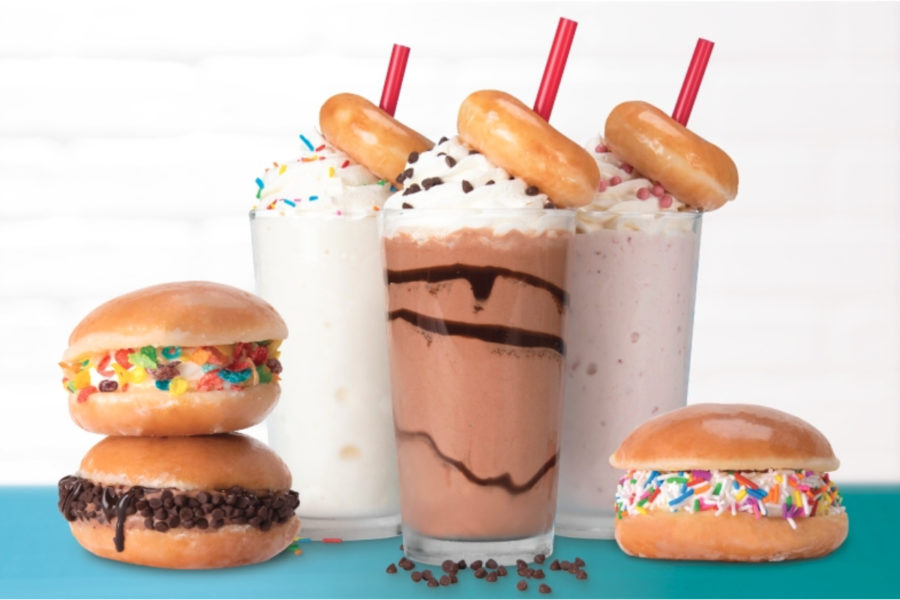
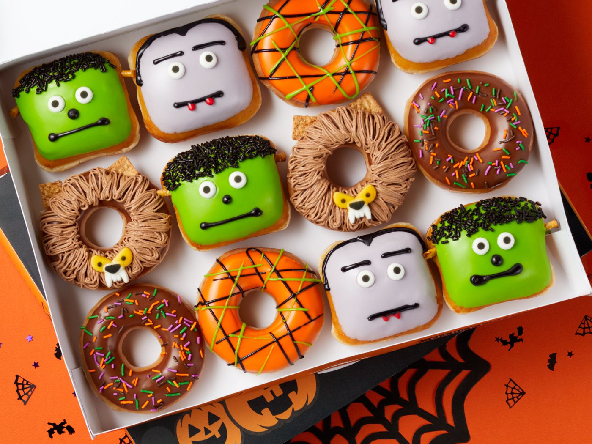
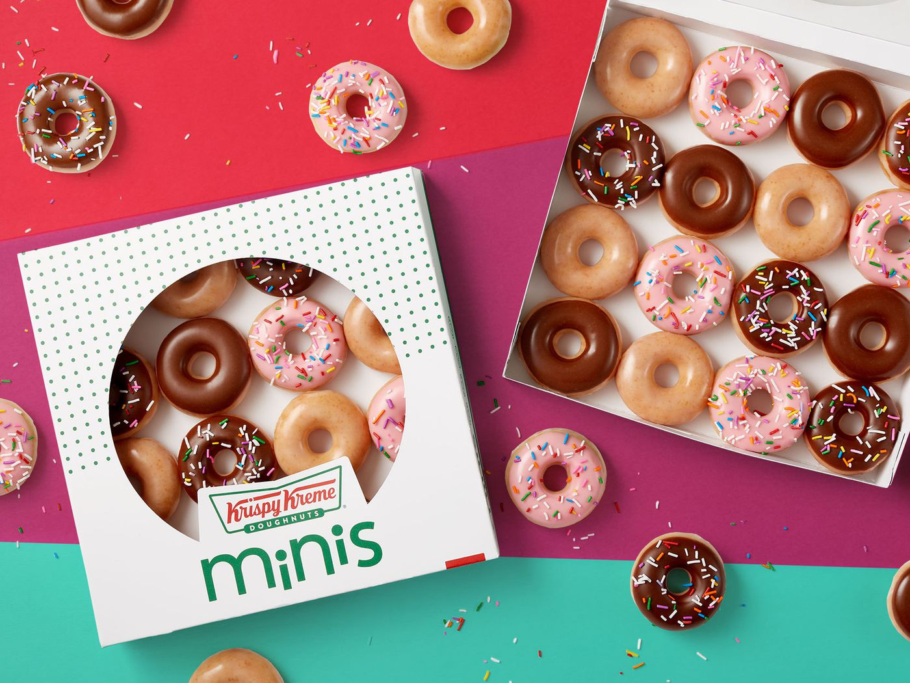
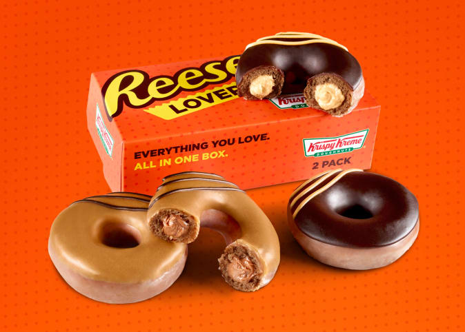
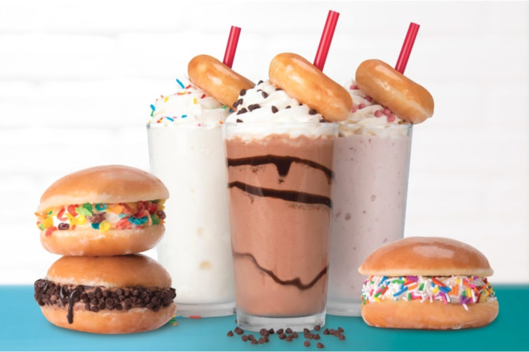
Krispy Kreme Doughnuts, Inc. is an American doughnut company and coffeehouse chain owned by JAB Holding Company. Krispy Kreme was founded by Vernon Rudolph, who bought a yeast-raised recipe from a New Orleans chef, rented a building in 1937 in what is now historic Old Salem in Winston-Salem, North Carolina, and began selling to local grocery stores. Steady growth preceded an ambitious expansion as a public company in the period 2000 to 2016, which ultimately proved unprofitable. In 2016, the company returned to private ownership under JAB Holding Company, a private Luxembourg-based firm.
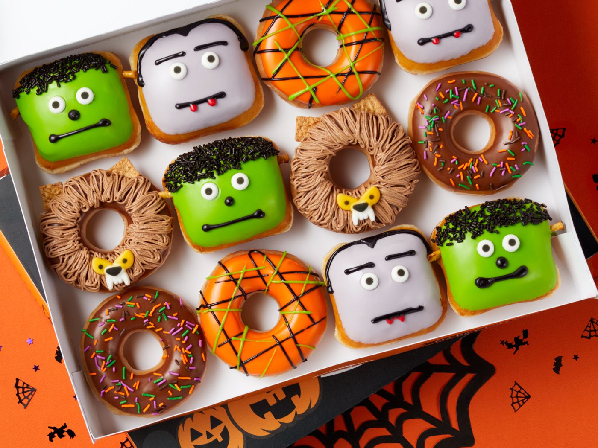
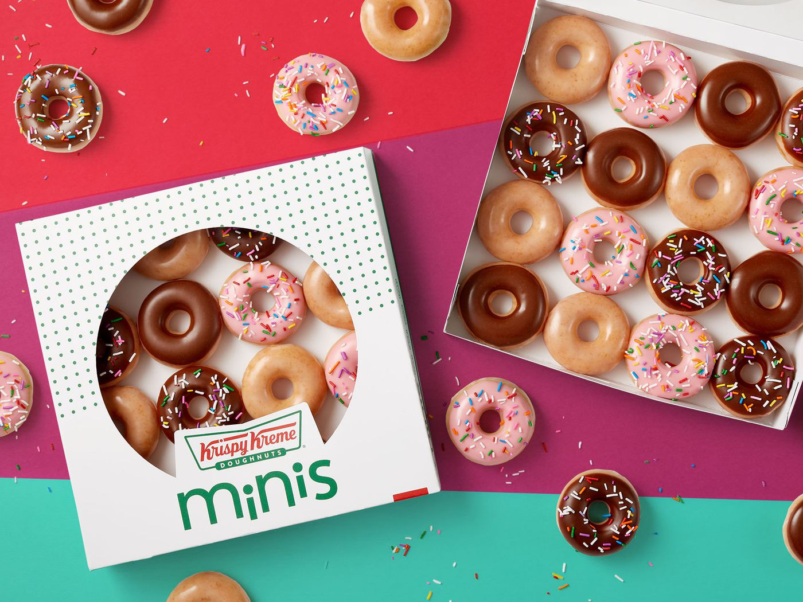
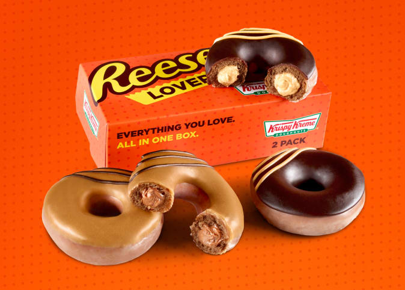
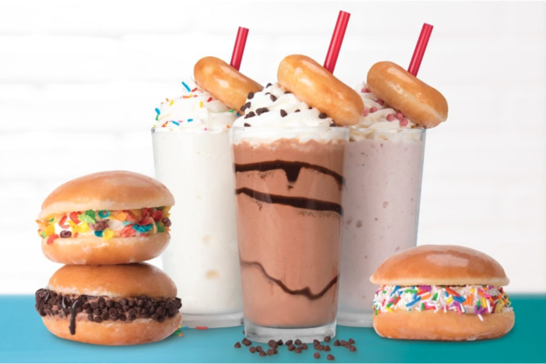